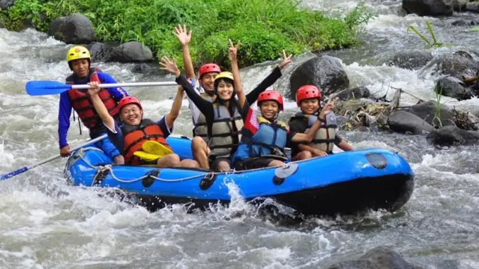

Perbedaan rafting Kaliwatu dan Kasembon terletak pada lokasi, panjang lintasan, tingkat kesulitan jeram, harga paket, dan target peserta, sehingga keduanya cocok untuk kebutuhan wisata yang berbeda.
- Rafting Kaliwatu berada di Sungai Brantas, Kota Batu, dengan lintasan sekitar 7-9 kilometer dan tingkat kesulitan grade 2 yang ramah pemula.
- Rafting Kasembon berada di Sungai Konto dan Sumber Dandang, Kabupaten Malang, dengan lintasan sekitar 7,5-8 kilometer dan tingkat kesulitan grade 2 hingga 3+ yang lebih menantang.
- Harga paket Kaliwatu umumnya mulai sekitar Rp180.000-Rp215.000 per orang, sedangkan Kasembon mulai sekitar Rp215.000-Rp450.000 per orang tergantung jenis paket.
- Kaliwatu lebih dekat dari pusat Kota Batu, sementara Kasembon membutuhkan waktu tempuh lebih lama karena berada di perbatasan Kabupaten Malang dengan Kediri.
- Pemilihan lokasi sebaiknya disesuaikan dengan pengalaman peserta, jumlah rombongan, dan tujuan trip, baik untuk keluarga, komunitas, maupun outbound perusahaan.
Apa Itu Rafting Kaliwatu dan Rafting Kasembon?
Rafting Kaliwatu dan Kasembon adalah dua destinasi arung jeram populer di Malang Raya yang menawarkan pengalaman menyusuri sungai menggunakan perahu karet bersama pemandu bersertifikat.
Kaliwatu Rafting berlokasi di Desa Pandanrejo, Kecamatan Bumiaji, Kota Batu, dan memanfaatkan aliran Sungai Brantas bagian atas yang melintasi area persawahan dan tebing alami. Destinasi ini dikenal ramah untuk berbagai kalangan karena tidak mensyaratkan sertifikat rafter profesional bagi pesertanya.
Kasembon Rafting berlokasi di Desa Bayem, Kecamatan Kasembon, Kabupaten Malang, di kawasan perbatasan dengan Kabupaten Kediri. Lokasi ini memanfaatkan aliran Sungai Konto dan Sungai Sumber Dandang yang dikelilingi perbukitan dan hamparan sawah, serta sudah beroperasi sejak tahun 2006 sebagai salah satu pelopor wisata arung jeram di kawasan tersebut.
Kedua destinasi sama-sama menyediakan paket rafting reguler maupun paket gabungan dengan aktivitas outbound, namun karakter sungai dan pengalaman yang ditawarkan berbeda cukup signifikan.
Di Mana Lokasi Rafting Kaliwatu dan Kasembon?
Lokasi menjadi salah satu pembeda utama karena memengaruhi waktu tempuh, biaya transportasi, dan kemudahan akses bagi peserta dari berbagai kota di Jawa Timur.
Kaliwatu Rafting terletak di Jalan Raya Pandanrejo/Bung Tomo, Desa Pandanrejo, Kecamatan Bumiaji, Kota Batu. Jaraknya hanya sekitar 2 kilometer atau sekitar 20-25 menit berkendara dari pusat Kota Batu, sehingga mudah dijangkau wisatawan yang sedang berlibur di kawasan Batu maupun Malang Kota.
Kasembon Rafting terletak di Desa Bayem, Kecamatan Kasembon, Kabupaten Malang, di kawasan yang berbatasan dengan Kabupaten Kediri. Dari pusat Kota Malang, rute yang ditempuh biasanya melalui Batu, Pujon, dan Ngantang dengan waktu perjalanan sekitar 1,5 hingga 2 jam. Bagi wisatawan dari arah Kediri, jarak tempuhnya justru lebih singkat, sekitar 1 hingga 1,5 jam melalui Pare dan Kandangan.
Perbedaan jarak ini membuat Kaliwatu lebih praktis untuk trip singkat dari Kota Batu, sedangkan Kasembon lebih relevan bagi wisatawan yang datang dari arah Kediri atau yang memang berencana menghabiskan waktu lebih lama di kawasan Ngantang-Kasembon.
Berapa Jarak Lintasan dan Durasi Rafting di Kaliwatu dan Kasembon?
Jarak lintasan rafting Kaliwatu berkisar 7-9 kilometer dengan durasi pengarungan sekitar 1,5-2 jam, sedangkan lintasan Kasembon sekitar 7,5-8 kilometer dengan durasi kurang lebih 2 jam.
Berdasarkan informasi operator yang dipublikasikan pada 2024, lintasan Kaliwatu menyusuri Sungai Brantas sepanjang 7 hingga 9 kilometer dari titik start hingga finish. Sementara itu, berdasarkan publikasi operator wisata pada 2025, lintasan Kasembon menyusuri Sungai Sumber Dandang sepanjang 7,5 hingga 8 kilometer, setara dengan sekitar dua jam pengarungan.
Meski angka jarak keduanya relatif berdekatan, pengalaman selama pengarungan tetap berbeda karena karakter arus, jumlah jeram, dan kontur sungai yang tidak sama. Durasi aktual di lapangan juga dapat bervariasi tergantung debit air, jumlah rombongan, dan jenis paket yang dipilih.
Bagaimana Tingkat Kesulitan Jeram di Kaliwatu dan Kasembon?
Tingkat kesulitan rafting Kaliwatu umumnya berada di grade 2 yang ramah pemula, sedangkan Kasembon berada di kisaran grade 2 hingga 3+ yang menuntut lebih banyak stamina dan keberanian.
Sungai Brantas di kawasan Kaliwatu memiliki arus yang cukup deras namun tetap terkendali, dengan jeram bergrade 2 yang dirancang agar dapat dinikmati peserta tanpa pengalaman rafting sebelumnya. Setiap perahu tetap didampingi guide berpengalaman dan tim rescue, sehingga faktor keamanan tetap terjaga meski sensasinya cukup memacu adrenalin.
Sungai Konto dan Sumber Dandang di kawasan Kasembon dikenal memiliki karakter arus yang lebih dinamis, dengan sekitar delapan titik jeram di sepanjang lintasan dan beberapa di antaranya memiliki ketinggian hingga tiga hingga empat meter. Karakter inilah yang membuat Kasembon lebih sering direkomendasikan untuk peserta yang sudah pernah mencoba rafting atau yang secara khusus mencari sensasi lebih menantang.
Perbedaan tingkat kesulitan ini menjadi salah satu pertimbangan paling penting sebelum memilih lokasi, terutama bagi rombongan dengan anggota yang belum pernah rafting sama sekali.
Berapa Harga Paket Rafting Kaliwatu dan Kasembon?
Harga paket rafting Kaliwatu umumnya mulai dari sekitar Rp180.000 hingga Rp215.000 per orang, sedangkan paket Kasembon mulai dari sekitar Rp215.000 hingga Rp450.000 per orang tergantung jenis trip yang dipilih.
Kaliwatu menawarkan struktur harga yang relatif sederhana untuk paket rafting reguler, dengan opsi tambahan aktivitas seperti donut boat, paintball, atau mountain bike yang dapat menaikkan total biaya kunjungan hingga kisaran Rp1.500.000 untuk paket lengkap.
Kasembon membagi paketnya menjadi beberapa kategori seperti family trip, adventure trip, dan night trip, dengan rentang harga yang lebih lebar karena mencakup fasilitas tambahan seperti local transport, coffee break, hingga makan siang prasmanan. Harga yang sedikit lebih tinggi ini sejalan dengan jarak lintasan yang menantang dan cakupan fasilitas pendukung yang lebih lengkap.
Sebagai catatan, harga di lapangan dapat berubah sewaktu-waktu dan biasanya lebih murah untuk pemesanan rombongan besar, sehingga sebaiknya calon peserta mengonfirmasi tarif terbaru langsung ke pihak operator sebelum memesan.
Fasilitas Apa Saja yang Tersedia di Kaliwatu dan Kasembon?
Kedua lokasi sama-sama menyediakan perlengkapan keselamatan lengkap, guide bersertifikat, dan fasilitas pendukung, meski cakupan detailnya sedikit berbeda.
Kaliwatu Rafting umumnya menyediakan perahu karet, dayung, pelampung, helm, welcome drink, guide berpengalaman, serta asuransi kecelakaan bagi peserta. Area basecamp juga dilengkapi tempat istirahat dan aktivitas outdoor tambahan seperti paralayang dan wisata petik apel di sekitarnya.
Kasembon Rafting umumnya menyediakan fasilitas serupa dengan tambahan seperti rescue team khusus, local transport dari titik finish kembali ke basecamp, coffee break, makan siang, mushola, toilet, area foto, dan bahkan akses wifi di area basecamp.
Karena aktivitas rafting tergolong berisiko, calon peserta disarankan memeriksa detail asuransi dan standar keselamatan operator secara langsung, misalnya melalui panduan keselamatan wisata air yang diterbitkan otoritas pariwisata resmi seperti.
Siapa yang Cocok Memilih Rafting Kaliwatu atau Kasembon?
Rafting Kaliwatu lebih cocok untuk pemula, keluarga, dan rombongan yang menginginkan trip singkat dekat Kota Batu, sedangkan Kasembon lebih cocok untuk peserta yang mencari tantangan lebih besar atau kegiatan outbound korporat berskala menengah hingga besar.
Karakter arus yang lebih tenang dan lokasi yang dekat membuat Kaliwatu menjadi pilihan populer untuk wisata keluarga, gathering komunitas kecil, atau wisatawan yang baru pertama kali mencoba arung jeram. Sebaliknya, jeram yang lebih tinggi dan variatif di Kasembon lebih diminati oleh kelompok yang mencari sensasi ekstra atau perusahaan yang ingin mengadakan outbound dengan unsur tantangan fisik dan kerja sama tim yang lebih kuat.
Perlu dicatat bahwa Kasembon umumnya menetapkan batas usia minimal sekitar 12 tahun bagi peserta, sehingga kurang direkomendasikan untuk keluarga dengan anak balita. Kaliwatu relatif lebih fleksibel, meski tetap disarankan mengecek syarat usia dan kondisi kesehatan langsung ke pengelola sebelum berangkat.
Kesalahan Umum Saat Memilih Antara Kaliwatu dan Kasembon
Kesalahan yang paling sering terjadi adalah memilih lokasi rafting hanya berdasarkan harga tanpa mempertimbangkan tingkat kesulitan dan kesiapan fisik peserta.
Beberapa kekeliruan lain yang umum ditemui antara lain tidak mengecek jarak dan waktu tempuh dari kota asal, sehingga rombongan tiba terlalu siang atau kelelahan sebelum sesi rafting dimulai. Wisatawan juga sering lupa menanyakan syarat usia minimal, terutama jika membawa anak-anak, serta tidak mengonfirmasi apakah harga yang tertera sudah termasuk asuransi dan makan siang atau belum.
Kesalahan lain yang cukup fatal adalah mengabaikan kondisi cuaca dan debit air sungai. Baik Kaliwatu maupun Kasembon dapat menyesuaikan jadwal atau membatalkan sesi demi keselamatan peserta saat kondisi sungai dinilai tidak aman, sehingga penting untuk selalu mengonfirmasi jadwal H-1 sebelum keberangkatan.
Tips Memilih Rafting Sesuai Kebutuhan Anda
Sesuaikan pilihan antara Kaliwatu dan Kasembon dengan tingkat pengalaman peserta, jarak tempuh yang bisa ditolerir, serta anggaran yang tersedia untuk trip tersebut.
Untuk peserta pemula, keluarga dengan anak di atas usia yang diizinkan, atau rombongan yang ingin trip singkat, Kaliwatu Rafting umumnya menjadi opsi yang lebih praktis karena lokasinya dekat dan tingkat kesulitannya lebih rendah. Untuk peserta yang sudah berpengalaman, komunitas pecinta adrenalin, atau perusahaan yang membutuhkan program outbound dengan tantangan lebih tinggi, Kasembon Rafting layak dipertimbangkan meski membutuhkan waktu tempuh lebih panjang.
FAQ
Apa perbedaan utama rafting Kaliwatu dan Kasembon?
Perbedaan utamanya terletak pada lokasi, tingkat kesulitan jeram, dan harga paket, di mana Kaliwatu lebih dekat dan ramah pemula, sedangkan Kasembon lebih menantang dan berjarak lebih jauh.
Apakah rafting Kaliwatu aman untuk pemula?
Rafting Kaliwatu umumnya dianggap aman untuk pemula karena tingkat kesulitannya berada di grade 2 dan selalu didampingi guide serta tim rescue bersertifikat.
Apakah rafting Kasembon cocok untuk anak-anak?
Rafting Kasembon umumnya menetapkan usia minimal sekitar 12 tahun bagi peserta, sehingga kurang direkomendasikan untuk anak balita atau anak usia dini.
Arya
penulis artikel yang sudah berpengalaman di dalam dunia wisata outbound Batu Malang.